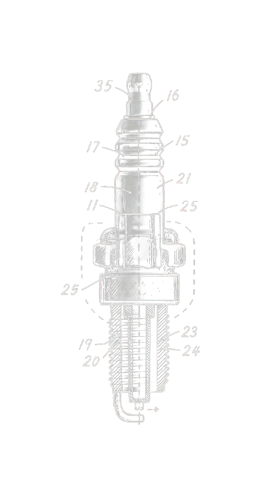

SPARK.AI
WORKSHOPS - CONSULTANCY - STRATEGY - APPLIED AGENTICS

The intersection of Analog Intuition and Digital Execution. We Consult, Build, and Train AI systems that work. SPARK.STUDIO handles creative workflows—film, photography, generative content, VEO-3 video production, and media automation for agencies and production teams including Training Videos, Social Media Content, Commercials & Marketing visuals.
SPARK.LAB tinkers, assembles, experiments, and workshops in-house AI solutions and strategies for business operations—scheduling, support, and task automation that run on your infrastructure and your ecosystem.
SPARK.AI deploys both: strategic implementation that turns AI tools into reliable business systems. We see AI as an enabler—not a replacement, but a tool that amplifies what you already do well. It handles repetitive work, accelerates production, and creates space for the strategic and creative thinking that actually matters. No hype. Real solutions.
We've been here for 30 years. Ventura and Santa Barbara—not a satellite office, not remote support. Local. In the trenches. Raised in garages, backyard dirt football fields, concert halls, and RadioShacks. SPARK.STUDIO grew from decades of hands-on film and media production work with agencies and creative teams across the Central Coast. SPARK.LAB emerged from that same foundation—building systems, solving problems, tinkering with machines. We love knobs, switches, diagrams, tubes, sparks, buttons, lights. SPARK.AI is the evolution: bringing AI implementation to the teams and companies we've worked alongside for three decades. We know this community. We're part of it.
We start where you are. SPARK.STUDIO builds branded content—video campaigns, photography, generative media—that works across platforms. Fast turnarounds. Real production value. SPARK.LAB packages custom systems: Mac Minis running local LLMs tailored to your operation—HVAC dispatch automation, health clinic scheduling, retail inventory management, legal intake workflows. Voice AI for 24/7 phone support. Task automation that runs on your infrastructure, not someone else's cloud. SPARK.AI connects it all: AI-powered websites, automated content pipelines, intelligent customer service systems. We deploy solutions built for Main Street businesses—not enterprise budgets. Whether you're on the Market Street corridor or managing a regional operation, we work with what you have and build what you need.

My father learned mechanics from WWI veterans in the 1930s through the Works Progress Administration, men who'd kept tanks running through the Meuse-Argonne and spoke about carburetors like scripture. He ended up painting cars in a Detroit Ford shop while my mother worked second shift as a janitor, 3 PM to 1 AM, cleaning senators' offices and never complaining about the work. I inherited the mechanic gene from him and the work ethic from her, which meant I spent my childhood taking things apart—cassette decks in 1984, linking two units together to make mixtapes in the basement, not because I understood electronics but because I needed to see how things connected, how they spoke to each other. In 1975, at seven years old in my dad's pizza place in Hood River, Oregon, I sat in a dark corner playing Pong...and understood for the first time that I was having a conversation with a machine, that it was teaching me and I was teaching it back, a language I've been speaking fluently for fifty years even though I failed every math test they put in front of me.
That conversation never stopped. Amiga code in the '80s, online chess in LA internet cafés in '94 before most people had email, building websites in '98, custom film editing rigs in the 2000s when off-the-shelf systems couldn't keep up, adapting vintage lenses to modern digital cameras—always operating at the intersection of analog intuition and digital execution, always showing up early to frontiers when things are still raw and unpolished. In 2013, DeepMind taught a computer to play Pong the exact same way I learned in 1975, through trial and error and conversation, and that breakthrough led to solving problems nobody thought machines could solve. Now I run SPARK.AI in Ventura, California, helping creative agencies and operational teams integrate generative and agentic AI into real-world workflows—not by selling theory or ripping out what works, but by building hybrid systems that blend proven processes with new capability. I don't wait for technology to be easy. I show up when it's a frontier, take it apart, and figure out how to make it work. 1975–Present. Pong. The ball is still in play.